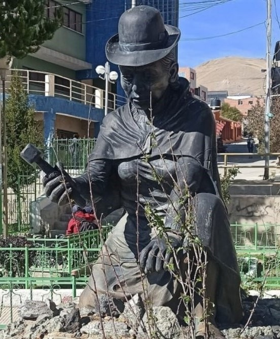

Potosí - Llallagua - Siglo XX
Monumento a las Palliris

📸 Imagen 1 (Monumento 3D): Elaboración propia / Registro 3D local. Fuente periodística: Choque Tapia, Paola. "Palliris de Llallagua, sobrevivencia en medio del olvido"[cite: 5].
🎙️ Relato histórico y música ambiental:
🎵 Relato basado en la investigación de Paola Choque Tapia sobre las mujeres mineras de Llallagua[cite: 5].